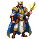

A Factorio-style tech tree for Archie. first-service is the single root; completing a challenge unlocks blocks (usable in challenge mode) + downstream challenges, and grants XP toward its track. Climb each track Novice → Architect to unlock titles & avatars. Click any node to inspect it.
Two avatar layers, both earned by progression — the secondary "keep leveling" stimulus. You equip one as your profile avatar (top-bar account menu + profile panel); unlocking a new one fires a celebratory toast.

5 stages driven by total mastery across all tracks: Novice → Builder → Engineer → Architect → Grand Architect. The primary "level up my guy" motivator — it's your top-bar face.
Unlocked at high tier in a track. + 6 more: The Scaler (Foundations), The Courier (Edge), The Conductor (Realtime), The Sentinel (Reliability), The Warden (Security), The Oracle (AI/ML).
Generated with PixelLab (PixFlux 64×64, black outline + detailed shading, transparent bg) — same recipe + local-asset security posture as the component icons (D38). Full set ≈ 12 avatars (5 rank stages + 7 track masters). PixelLab balance is currently $1 → batch-generate the set in Phase C.